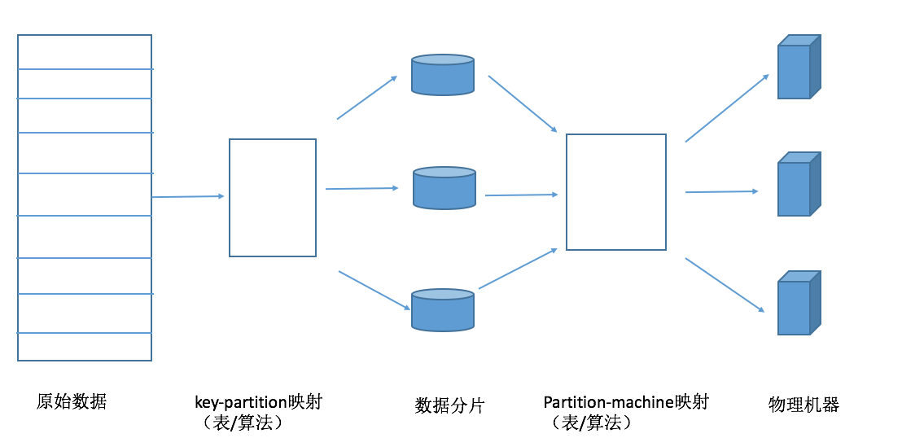
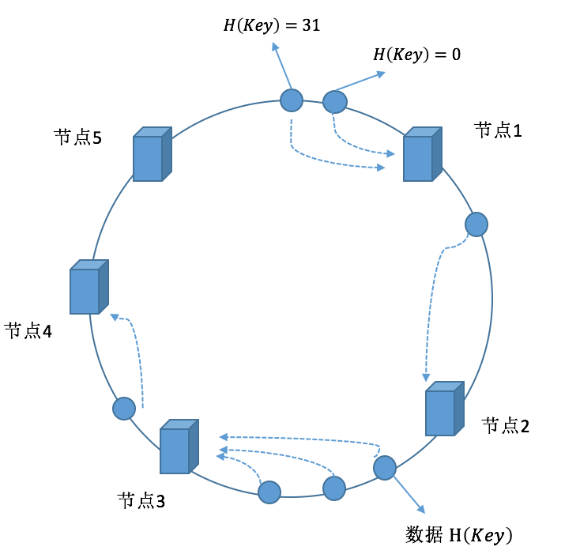
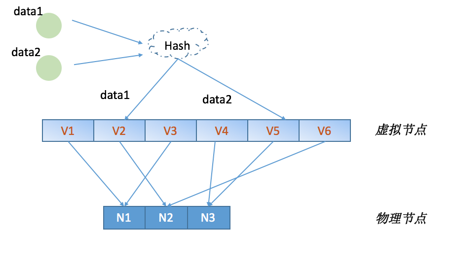

在大数据时代，稍大型企业的数据量已经达到TB甚至PB级别，显然单机无法存储于处理如此规模的数据量。分布式数据的存储必然涉及到数据的分片，本篇分析了几种常用的数据分片模型。
1. 数据分片概念
目前主流的大数据存储于计算系统通常采用横向扩展方式支持系统的可扩展性，即通过增加机器数据获得水平扩展能力。
对于待存储的海量数据，需要通过数据分片(Shard/Partition)来将数据进行切分、并通过数据路由(Route)机制分配到各个机器中。
这里需要区分数据分片与数据复制的概念。
数据分片: 实现的是系统的水平扩展，达到通过增加机器来提高容量的目的
数据复制: 实现的是数据的高可用性，将数据复制多份来保障数据不会丢失（但是对数据更新时存在一致性问题）
2. 分片模型
下图为数据分片与路由的通用模型。相当于经过了二级映射。
- 第一级映射是key-partition映射，多对一映射关系，即多条记录被映射到同一个数据分片中
- 第二级映射是partition-machine映射，多对一映射关系，即多个数据分片被映射到同一个物理机中

哈希分片和范围分片都可以映射到这个抽象模型中。哈希分片，主要是通过哈希函数来建立key-partition映射关系，只能根据某个记录的主键获得记录内容，但是哈希方法需要记录的元信息非常的简单，只需要知道哈希函数的计算方式就行。范围/顺序分片，该分片方式在分布式表格系统中比较常见，能够根据指定的主键范围一次性读取多条满足条件的记录。
3. 哈希分片
通过哈希函数进行数据分片是常用手段，常用的三种哈希分片是：Round Robin、虚拟桶、一致性哈希等方法。
3.1 Round Robin/哈希取模
该方法是非常常用的数据分片方法。将哈希值与服务器个数作除法取模映射，假设有K台物理机，则通过以下哈希函数即可实现数据分片：
H(Key) = hash(key)mod K
H(Key)的数值即为存储该数据的物理机的编号。但是当服务器上线或者下线时，K的值发生变化，数据映射完全被打乱，几乎所有的额数据都需要重新分布，这将带来大量的数据迁移工作。
3.2 虚拟桶/内存表
该思路不再简单的将哈希值和服务器个数做除法取摸映射，而是将哈希值与服务器的对应关系作为元数据，交给专门的虚拟桶/内存表来管理。所有记录首先通过哈希函数映射到对应的虚拟桶（多对一映射），第二层映射是虚拟桶和物理机之间的映射关系（多对一映射），可以通过查内存表来管理。
该方式相比于Round Roubin，由原先记录直接到物理机的单层映射解耦成两层映射，大大加强了系统的扩展灵活性。这样，集群扩容是，可以将部分哈希值分配给新加入的机器并迁移对应的数据。
3.3 一致性哈希
分布式哈希（DHT）是P2P(Peer-to-Peer)网络（对等网络）和分布式存储中常见的一项技术。即考虑在多机分布环境，每台机器负责承载部分数据的存储情形下，如何通过哈希方式对数据进行增/删/改/查等数据操作的方法。
算法思想： 给系统中每个节点（物理机器）分配一个token（根据物理机器IP、端口映射到哈希空间），这些token构成一个哈希环。执行数据增加操作时，先计算数据Key的哈希值，然后存放到顺时针方向第一个大于等于该哈希值的token所在的节点。
一致性的优点在于节点加入、删除时只会影响在哈希环中相邻的节点，而对其他节点没有影响。
假设哈希空间表示的长度为n, 则哈希空间所表达的数值范围是 \(0-2^n\) , 一致性哈希算法大致如下：
- 首先求出每个服务器的hash值，将其配置到一个 \(0-2^n\) 圆环区间上；
- 使用同样的方法求出待存储的主键hash值，也将其配置到这个圆环上；
- 数据的路由，将数据存储到找到合适的服务器节点上（下面的路由问题）。

3.3.1 路由问题
上述方法能够将海量数据分布到集群中的不同机器集群, 实现数据分片功能。那对于接收到查询请求的节点（该服务器节点可以是hash环中的任意一个），如何根据数据记录的主键以及哈希函数来定位到记录的内容呢？
下面列举了基于空间复杂度的几种路由方式：
O(1)顺序查找法
这是一种最直观的查找方法。每台服务器只要记录它的前一个以及后一个节点的位置信息。接收到查询请求的节点计算出数据主键的Hash值，然后判断是否在自身范围内，不在则转交给后继节点继续查找，如此循环直到找到某个机器节点。
该做法维护的节点位置信息的空间复杂度为O(1), 但是有可能遍历hash环中所有服务器，所以时间复杂度为O(N)。
O(N)路由表法
为了加速查询，可以在每个机器节点维护一个大小为N的路由表（假设哈希空间为 \(0~2^n\)，这里n即为Hash空间二进制数值比特位长度）, 路由表中的第 i 个元素记录了编号为 \(p+2^{i-1}\), 其中p为服务器在Hash环中的编号。 通过维护 O(N) 的位置信息，查找的时间复杂度可以改进为 Olog(N)。
还有一种方式，就是在每个机器节点维护一个大小为N的路由表，这里的N不是Hash空间的长度，而是物理节点的个数。即在每个服务器维护整个集群中所有服务器的位置信息，查找服务器的时间复杂度为 Olog(N)。工程上一般采用这种方法，一般需要一个带有总控节点的存储系统来统一维护这张表。
3.3.2 节点的加入/离开
节点的加入根据“路由问题“可以找到后继节点，则改变相应位置的前驱、后继节点的位置关系，以体现新的网络结构。同时需要将对应的数据重新进行分片，进行数据的迁移。
节点的离开需要考虑正常与异常离开。正常离开前需要做些准备工作，包括通知相应节点更新前驱后继节点以及将本身持有数据迁移到后继节点上。异常离开往往是机器故障导致，为避免故障机器中数据可能丢失，需要采用将同一份数据在多台机器上保留副本的方式。
3.3.3 虚拟节点
引入”虚拟节点“的概念，主要为解决一致性哈希算法潜在的问题：机器节点映射到环状结构的位置是随机的，可能会导致机器负载不均衡；同时如果将所有机器平等看待会导致低配置机器高负载的情况。
虚拟节点即将一个物理节点虚拟成若干的虚拟节点，分别映射到一致性哈希的环状结构的不同位置。一方面会有更佳的负载均衡，也可以兼顾到机器的异质性问题。
下面简要展示Golang实现的一致性Hash算法的主要结构。
//定义Hash环，切片中元素为有序的物理节点Hash值
type Circle []uint32
type Consistent struct {
// Hash函数
hash Hash
// 有序环
circle Circle
//虚拟节点个数
virtualNodes int
//点到主机的映射（多对一的关系）
virtualMap map[uint32]string
//主机列表
members map[string]bool
//同步锁
sync.RWMutex
}
//向Hash环中加入节点
func (c *Consistent) Add(elt string)
//从Hash环中删除节点
func (c *Consistent) Remove(elt string)
//根据数据主键，获取存储的节点信息
func (c *Consistent) Get(key string) string
对照上面的结构，大致的结构图如下：

当然，以上的实现是对于一致性Hash的基本操作，具体的业务还需要考虑数据的存储，迁移，备份等等操作。
4. 范围分片
范围分片首先将所有记录的主键进行排序，然后在排序好的主键空间里将记录划分成连续的范围（每个范围称为一个子表），每个字表存储有序的主键空间片段内的所有记录，通过范围分片能够避免哈希分布的数据散列问题。
范围分片对应的key-partition映射表是通过记录主键排序切割获得的，而不同于哈希分片通过Hash函数获得。
很多大规模存储系统都支持上述范围的分片模式，比如Google的BigTable也基本遵循上述模式。不同点在于其数据分片映射表不是单层结构，而是组织成类似B+树的层次结构，这样可容纳的数据分片个数获得极大的提升。
B+树的层次结构中，每个字表相当于叶子节点，随着数据的插入和删除，某些字表可能变得很大或很小，数据分布不均匀。采用范围分片设计时就需要考虑子表的分裂与合并，这也将极大的增加系统的复杂度。
子表分裂是指当一个子表太大超过一定的阈值时需要分裂为两个子表，从而有机会通过系统的负载均衡机制分散到多个存储节点
子表合并一般由数据删除引起，当相邻的两个子表都很小时，可以合并为一个子表。合并的目的是为了防止系统中出现过多太小的子表，较少系统中的元数据。
5. 参考阅读
大数据日知录:架构与算法 Ch1